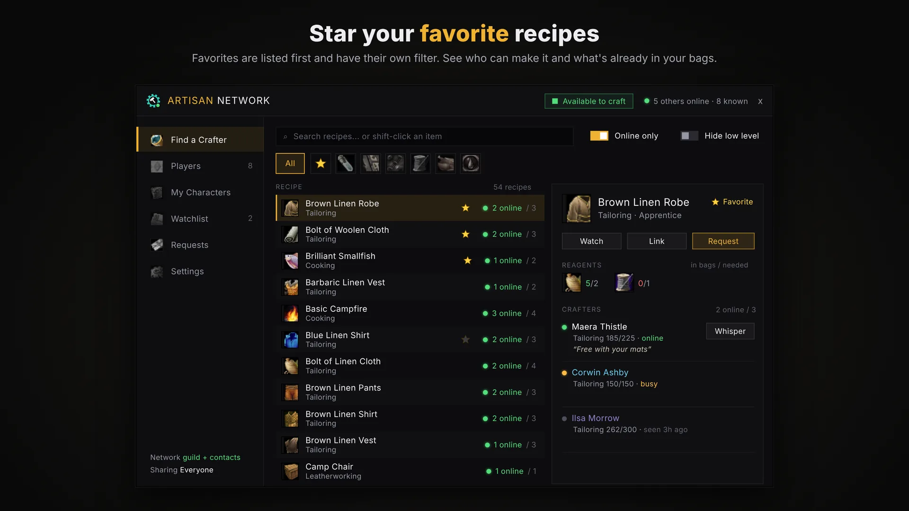
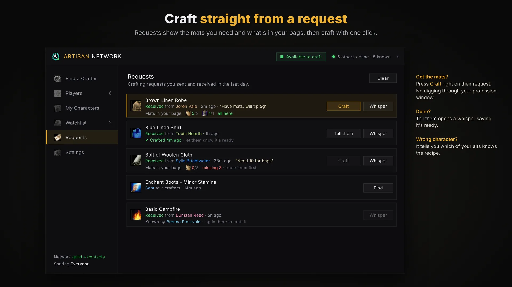
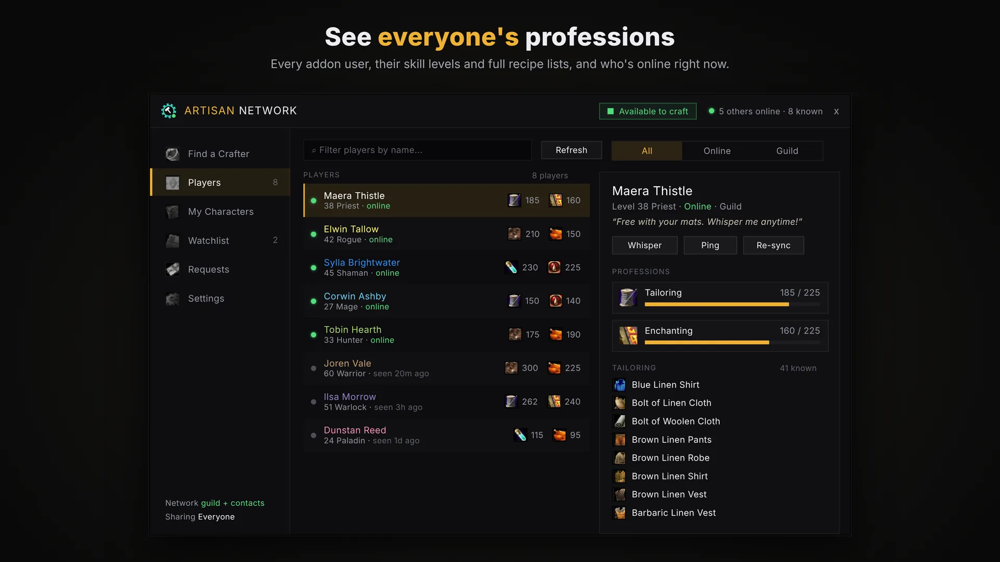
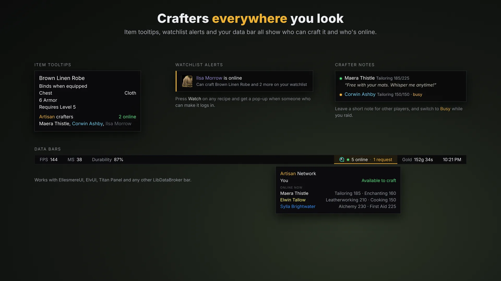
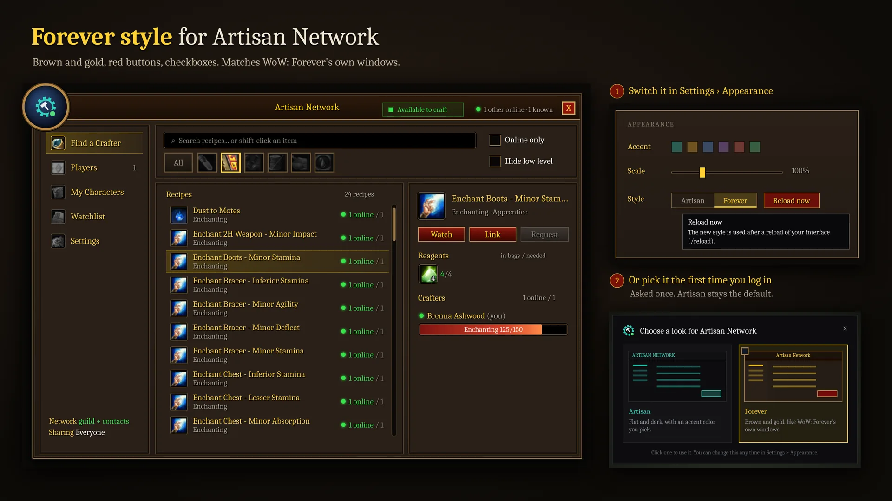
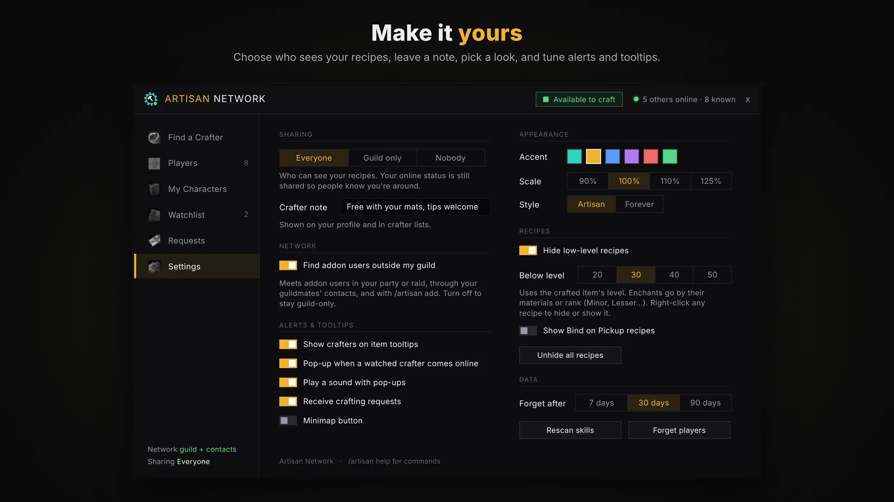

Artisan Network
Find a crafter for any recipe, see who's online to make it, and share your own professions automatically.

Features
Find a crafter
Search every recipe known on the network, or shift-click an item. See each crafter's skill, specialization and whether they're online, busy or away.
Reagents at a glance
Required reagents are color-coded by whether you have enough, have some in your bank, or are short. Rare recipes known by only one or two players are tagged.
Crafting requests
Send a pop-up request with an optional note to online crafters who know the recipe. A Requests page keeps sent and received requests for a day.
Players & your characters
See every addon user's professions, skill and recipes. Track your own characters' cooldowns like Transmutes and Mooncloth, and see recipes you could learn.
Watchlist & tooltips
Watch a recipe and get a pop-up when a crafter for it comes online. Item tooltips show crafters too, online players first.
Private when you want
Share recipes with everyone, your guild only, or nobody, and turn sharing off per character. Nothing is posted in chat or whispered automatically.
Screenshots











How to install
CurseForge app
Easiest- Open the CurseForge app and pick World of Warcraft.
- Choose your WoW Forever install.
- Search for Artisan Network and click Install.
- Launch the game. Updates install automatically.
First time in game
- Log in.
- Open each of your profession windows once so the addon can learn your recipes.
- Open Artisan Network with
/artisan,/anor the minimap button.
Commands
/an works the same as /artisan.
/artisan | Open or close the window |
/artisan search text | Search for a crafter |
/artisan who text | Show crafters in your chat window (only you see it) |
/artisan add First Surname | Add a player outside your guild |
/artisan ping First Surname | Check whether a player is online with the addon |
/artisan busy | Toggle Available/Busy |
/artisan status | Show connection info |
/artisan test | Toggle sample players on or off |
/artisan resetpos | Reset moved pop-ups to their default positions |
/artisan minimap | Show or hide the minimap button |
FAQ
Why is the network empty after installing?
It only contains players who run the addon. Getting your guild to install it fills it faster. Use /artisan test to see what a busy network looks like.
Why don't I see a player's recipes?
Their recipes only show up after they open their profession windows once.
Why can't I reach someone on another realm or faction?
Players can only be reached within their realm group and faction. That's a game limit.
How does it find other players?
Only through guild, group, raid and whisper channels: guildmates running the addon, addon users you group with, and people you add by name. You can limit it to your guild in Settings.
I found a bug. Where do I report it?
Leave a comment on the CurseForge page, or post it in The Forge Discord.
Want test builds first?
Join The Forge to try new Artisan Network features before release and shape what comes next.